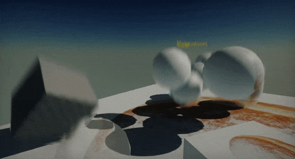
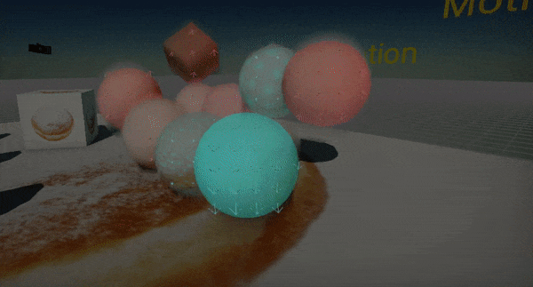
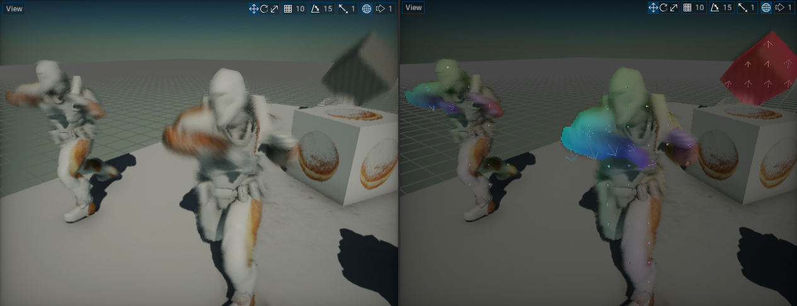

Motion Blur

Motion Blur effect simulates the blur of the objects based on its motion. When objects filmed by a camera are moving faster than the camera’s exposure time they are appearing as blurred on the edges. This can be caused by rapidly moving objects or a long exposure time. The effect itself is based on Motion Vectors buffer rendering which contains a objects pixels moving across the screen.
Properties

| Property | Description |
|---|---|
| Enabled | If checked, motion blur effect will be rendered. |
| Scale | The blur effect strength. Value 0 disabled is, while higher values increase the effect. |
| Sample Count | The amount of sample points used during motion blur rendering. It affects quality and performance. |
| Motion Vectors Resolution | The motion vectors texture resolution. Motion blur uses per-pixel motion vectors buffer that contains objects movement information. Use lower resolution to improve performance. |
Motion Vectors Debug

The editor supports rendering motion vectors visualization by checking the View -> Debug View -> Motion Vectors. You can use it to preview and debug motion vectors of your game objects.
Per-Bone motion

Skeletal meshes support Per Bone Motion Blur that handles rendering the pixels motion for the animated model bones transformation changes.